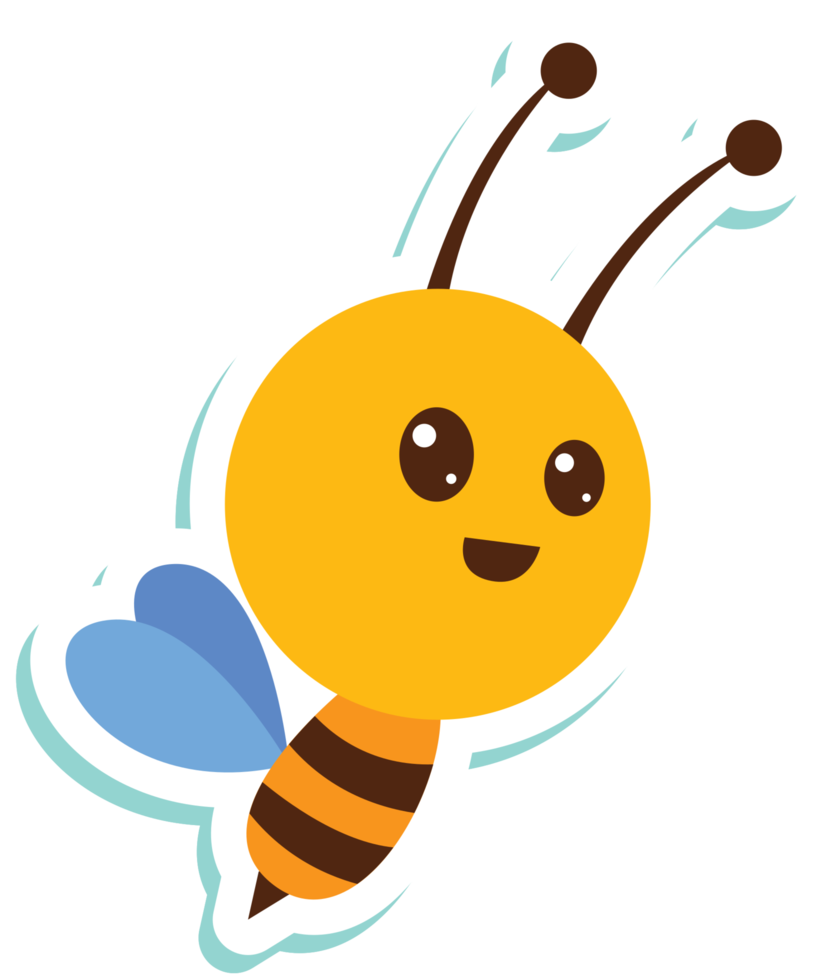
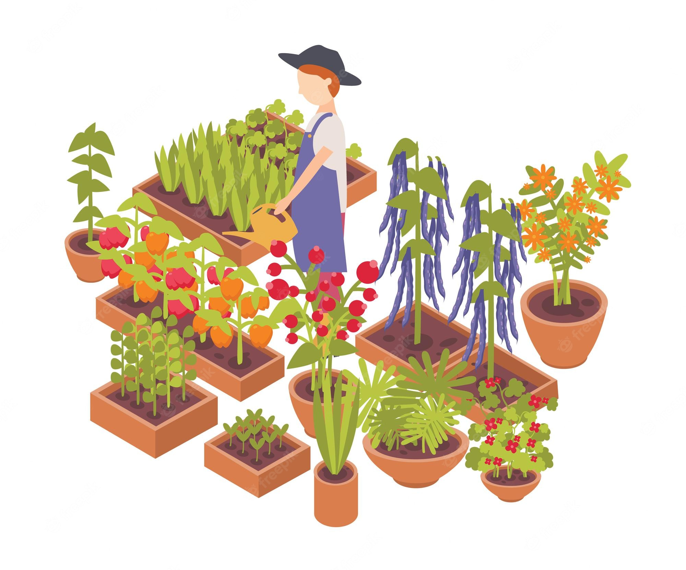
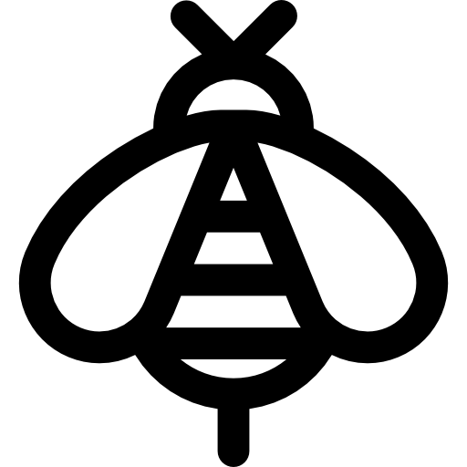
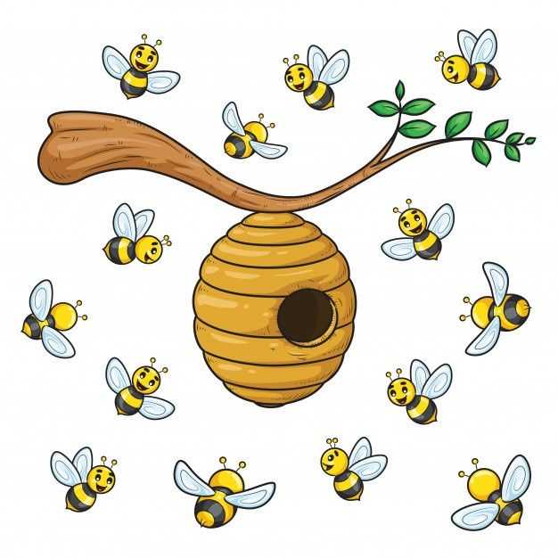
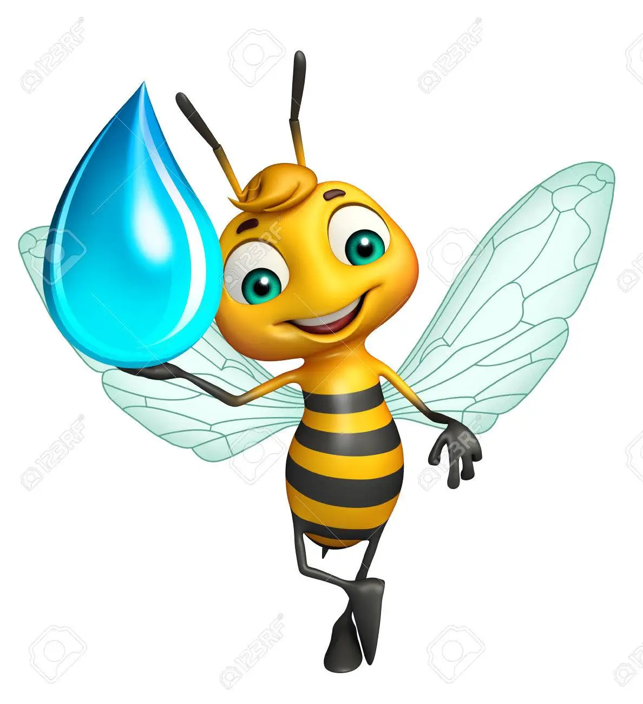
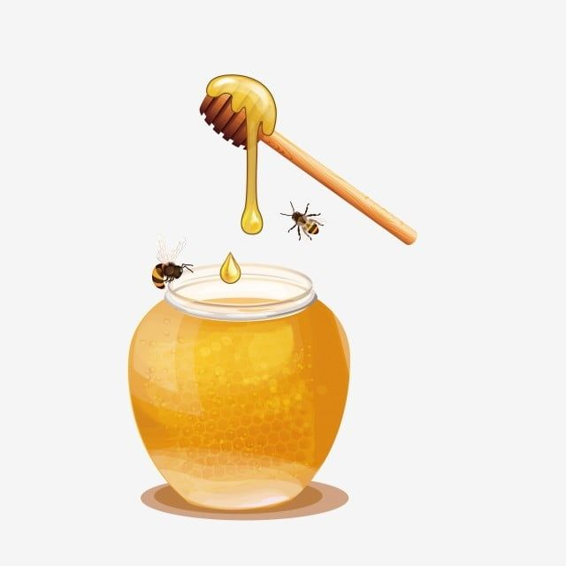

Factores que actuan en contra de las Polinizadoras

1El deterioro y la perdida del habitat
2El impacto del cambio climatico
3El uso de plasticidas y plaguisidas
4Especies Invasoras
5Enfermedades y parasitos
Debemos evitar la extinción de las abejas, con acciones sostenibles como las siguientes:


Cultiva flores amigables con las abejas como Girasoles, Oréganos, etc...

Protege los enjambres y evita acciones que afecten el medio ambiente

Coloca pequeñas fuentes de agua

}
Compra miel sin refinar a los agricultores de tu zona